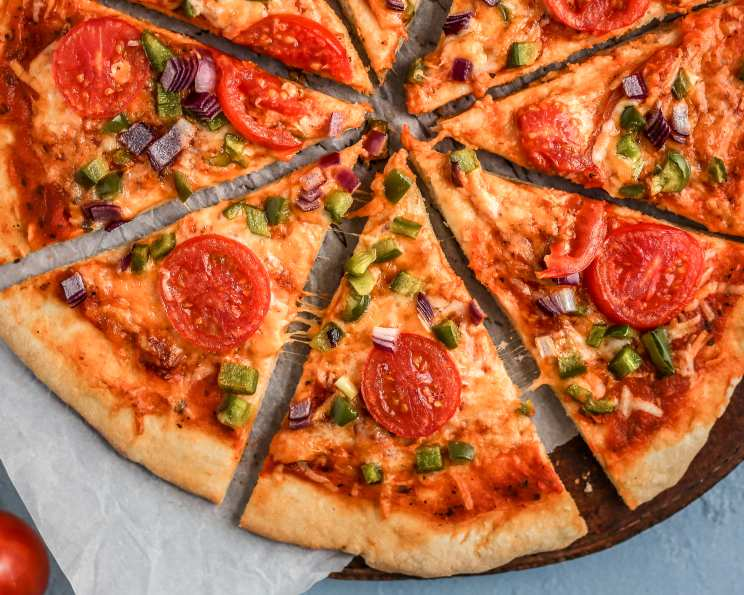

Home
Homemade Pizza Recipe

This simple and versatile pizza dough recipe requires just a few basic ingredients and yields a soft, chewy crust perfect for homemade pizzas. Easy to make and customizable, it’s a great base for all your favorite toppings.
Ingredients
- 2 1/2 cups flour
- 1 teaspoon salt
- 1 teaspoon sugar
- 1 tablespoon olive oil
- 1 cup warm water
- 1 packet (2 1/4 teaspoons) active dry yeast
Steps
- Activate Yeast
- Make Dough
- Knead Dough
- Let Dough Rise
- Shape and Bake